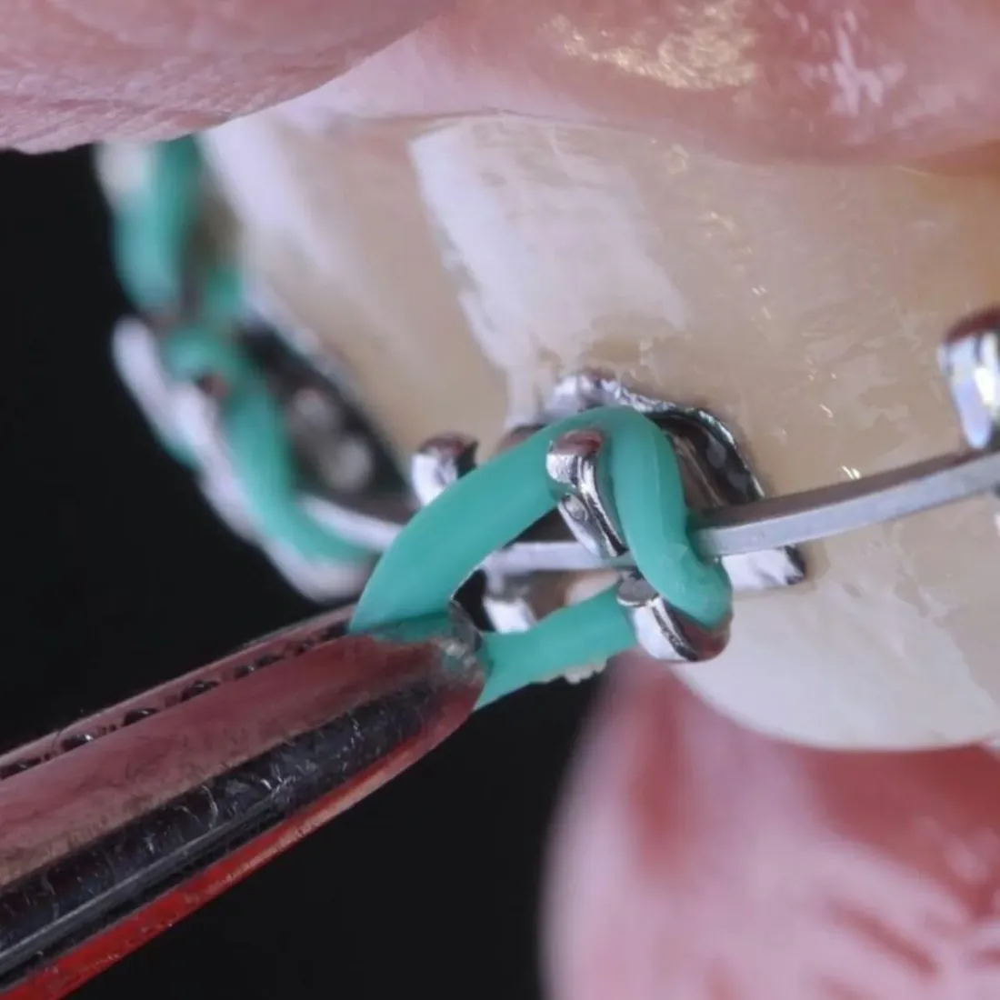

Ортодонтія
Вирівнюємо зуби й виправляємо прикус. Неправильний прикус — це не лише естетика: він впливає на гігієну, суглоби й навіть поставу.
Брекет-системи
Установка брекетів безболісна. Перші кілька днів може бути незвично — це нормально. Під час лікування регулярні активації та контроль.
Елайнери
Прозорі знімні капи, які поступово й м’яко вирівнюють зуби. Майже непомітні, знімаються під час їжі та чищення.
Мікроімпланти в ортодонтії
Маленькі опори, що допомагають рухати зуби точніше й швидше, без зайвого навантаження на сусідні зуби.
Розширення верхньої щелепи
Створює місце для зубів, покращує прикус і робить усмішку гармонійною.
Ретенційні капи та ретейнери
Після зняття брекетів чи елайнерів зуби «пам’ятають» старе положення. Ретенція закріплює результат.